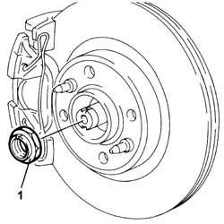
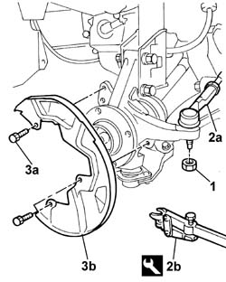
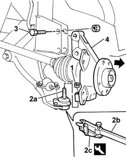
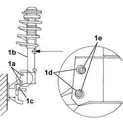
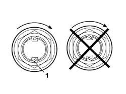

4450C10 front pillar (one), l/h or r/h complete with wheel hub - r+r with wheel removed - check wheel geometry separately
- Path
- Procedures > 44 SUSPENSION AND WHEELS > 4450 WHEELS AND HUBS > 4450C front wheel hubs > 4450C10 front pillar (one), l/h or r/h complete with wheel hub - r+r with wheel removed - check wheel geometry separately
- Kind
- repair procedure (removal / refitting; the operation number is the code)
- Applies to
- all engines; all production periods
- Interactive page
- https://sloeber94.github.io/elrnDB-fDbl/en/#/2584779
Applies to: all engines; all production periods
 Removing
Removing
 Refitting
RefittingPlace the car on a lift.
Remove the staking from the nut fixing the front wheel steering knuckle-hub assembly.
1. Undo the nut fixing the front wheel steering knuckle-hub assembly.

Applies to: all engines; all production periods
Op. 3310A30 FRONT BRAKE CALIPER (ONE) - R.R..
Op. 3310A57 FRONT BRAKE CALIPER BRACKET (ONE) - R.R..
Op. 3310A50 FRONT BRAKE DISCS - R.R..
1. Undo the nut fixing the track rod end ball joint to the steering knuckle.
2. Separate the track rod end ball joint (2a) from the steering knuckle using the tool (2b).
 | Name | Country |
|---|---|---|
2b | Head extractor | 1.847.035.000 |
3. Undo the three bolts (3a) fixing the dust shield (3b).

Applies to: all engines; all production periods
1. Undo the nut fixing the steering knuckle to the lower track control arm ball joint.
2. Separate the track control arm ball joint (2a) from the hub using the tools (2b) and (2c).
| Name | Country |
|---|---|---|
2b | Head extractor | 1.847.035.000 |
| Name | Country |
|---|---|---|
2c | Tool for extracting steering knuckles | 1.847.035.001 |
3. Undo the bolts fixing the hub to the shock absorber.
4. Remove the constant velocity joint and remove the front hub steering knuckle.

Applies to: all engines; all production periods
Refitting
RemovingFit the hub steering knuckle on the wheel side constant velocity joint.
Insert the track control arm ball joint in the hub steering knuckle and tighten the fixing nut.
1. Tighten bolts (1a) securing shock absorber (1b) to pillar (1c) to the specified setting.
 | Fastening | Component | Ø | Value (daNm) |
|---|---|---|---|---|
1a | Nut | FRONT DAMPER BOTTOM ATTACHMENT | M12 x 1.25 | (on pillar) 12 |

Applies to: all engines; all production periods
Join the steering track rod end to the steering knuckle and tighten the fixing nut to torque.
| Fastening | Component | Ø | Value (daNm) |
|---|---|---|---|---|
- | Nut | ADJUSTABLE STEERING LINKS | M10 x 1.25 | 4.9 |
Fit the dust shield.
Op. 3310A50 FRONT BRAKE DISCS - R.R..
Op. 3310A57 FRONT BRAKE CALIPER BRACKET (ONE) - R.R..
Op. 3310A30 FRONT BRAKE CALIPER (ONE) - R.R..
Tighten the front wheel hub fixing nut to torque.
| Fastening | Component | Ø | Value (daNm) |
|---|---|---|---|---|
- | Nut | FRONT HUB WITH BEARINGS | M22 | 7 + 55° |
1. Stake the nut collar. The collar should be cut on the notch on the hub, on the side opposite that of tightening the nut, so that the safety lug prevents accidental loosening.

Applies to: all engines; all production periods
Remove the car from the lift.
Topics linked from this page (3)
- 3310A30 FRONT BRAKE CALIPER (one) - R.R.
- 3310A50 front brake discs r r
- 3310A57 front brake calliper bracket - r r